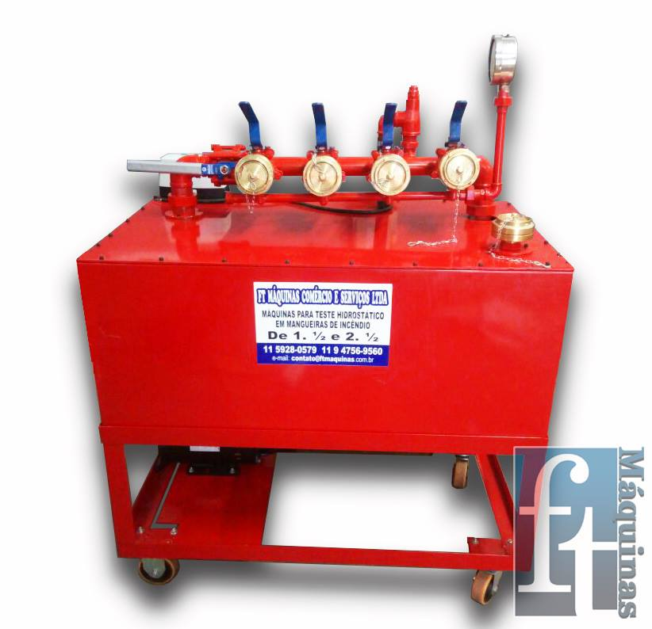
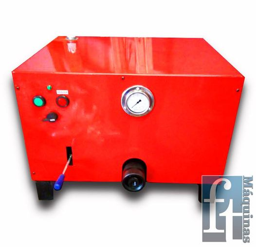
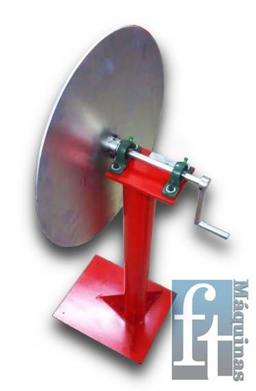

FT Maquinas
A FT Máquinas é uma empresa especializada em serviços de usinagem, torno CNC, torno mecânico, e fresa, oferecendo soluções de alta qualidade e precisão para atender às necessidades de diferentes setores industriais. A empresa conta com uma equipe de profissionais altamente qualificados para garantir a produção de peças com acabamentos impecáveis.
Com mais de XX anos de experiência no mercado, a FT Máquinas tem se destacado como uma referência em serviços de usinagem, atendendo empresas de diferentes portes e setores, como XXXXXXXXXXXXX. A empresa é reconhecida pela sua capacidade de produzir peças de alta qualidade e precisão.
A empresa preza pelo compromisso com seus clientes, atendendo as suas necessidades com eficiência e rapidez, buscando sempre a satisfação do cliente.
Produtos
Descrição da máquina para teste hidrostático.
Descrição da máquina de empatar mangueiras de incêndio.
Descrição do enrolador elétrico de mangueiras de incêndio.
Serviço que oferecemos
A FT Máquinas é uma empresa especializada em serviços de usinagem, torno CNC, torno mecânico, fresa e usinagem de precisão Com uma vasta lista de parceiros, a empresa é reconhecida por sua alta qualidade e precisão na produção de peças impecáveis, com acabamentos precisos e qualidade superior, atendendo às exigências do mercado com eficiência e rapidez.


Empresas Parceiras
A FT Máquinas é uma empresa que conta com uma vasta lista de parceiros que confiam em seus serviços de alta qualidade e precisão. Entre as empresas que contam com a expertise da FT Máquinas em usinagem, torno CNC, torno mecânico, fresa e usinagem de precisão, podemos destacar indústrias "automotivas, de construção, médicas e eletrônicas." A parceria com a FT Máquinas tem proporcionado às empresas parceiras a produção de peças impecáveis, com acabamentos precisos e qualidade superior, atendendo às exigências do mercado com eficiência e rapidez. Com a utilização de equipamentos de última geração e uma equipe altamente capacitada, a FT Máquinas tem se destacado como uma referência em serviços de usinagem de alta precisão. Entre as empresas que confiam no trabalho da FT Máquinas, destacam-se grandes players do mercado, como xxxxx, xxxxxx, xxxxxx, xxxxxx, entre outras. A confiança depositada por essas empresas é o reflexo do compromisso e excelência que a FT Máquinas tem oferecido em seus serviços de usinagem e produção de peças de alta qualidade.
Veja o que os clientes falam sobre nossa empresa!
Depois de 8 anos atuando como fornecedor de extintores, decidi me arriscar e
mudar de área, e está empresa me ajudou demais! Recomendo sim com certeza!
Diego Fernandes
CEO Expo Fundições

Depois de 8 anos atuando como fornecedor de extintores, decidi me arriscar e mudar de área, e está empresa me ajudou demais! Recomendo sim com certeza!
Diego Fernandes
CEO Expo Fundições